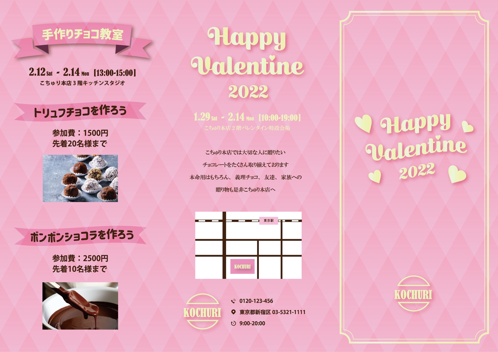

WORKS
Happy Valentine 2022

制作時期：大学3年後期・3週間
担当範囲：デザイン
仕様ツール：Illustrator、Photoshop、Word
架空のデパートの販促フライヤーを制作しました。ターゲットを20代前半の女性に設定しました。バレンタインに合わせてピンクを基調とした配色にし、子どもっぽい印象にならないような写真とフォントを選びました。狭い範囲で情報が混ざらないように注意して配置しました。
